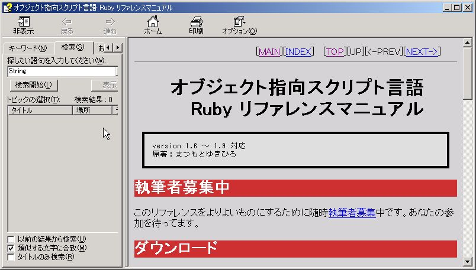

Ruby ビギナーのための CGI 入門 【第 3 回】 ページ 1
このページの目次
はじめに
筆者は実家への引越しや職場の異動に追われていましたが、 皆さん如何お過ごしでしょうか。 私は最近仕事で疲れた時に 実家の二匹の猫をからかうのを楽しみにしています。
今号の記事について
前回は HTML のフォームを使った CGI プログラムを作りました。 その一環として最後には簡易掲示板に挑戦しました。 掲示板としては荒削りでしたが、それなりに動作していましたね。 最終的にはこの簡易掲示板を本格的な掲示板に発展させるのですが、 今号はちょっと違う方向に話を進めていきます。
プログラムを作成する際、プログラムが思ったように動作せず、 エラーが起きることがあります。 CGI プログラムも例外ではありません。 プログラムを完成させるにはエラーを修正しなければならないのですが、 一般に CGI プログラムのエラーを修正するのは難しいとされています。
そこで、今号は少し寄り道をして CGI プログラムを 書く時に目にするエラーや その対処法について説明しようと思います。
対象読者
この記事は以下のような人を対象としています。
- 12 号 までの記事を読んだ人
- HTML を書ける人
- Windows 98/98SE/Me/2000/XP のいずれかを使っている人
この連載は前回 (12 号) までの記事を読んでいる人を対象として書かれています。 今号を読む前に前回までの内容を把握しておいて下さい。
準備
必要なものは下の 2 つです。
- サーバー
- Ruby
この他に RDE を使います。これらの準備の方法は 11 号 で述べたので、 詳しくはそちらを参照してください。 また、今号で使うプログラムを zip ファイルにまとめてあります。 前回と同じようにダウンロードして C:\ に展開して下さい。 rubima014-cgi.zip
エラーについて
今号の主題はエラーへの対応方法です。 いきなり対応方法について説明しても良いのですが、 少しエラーについて考えてみましょう。
一口にエラーと言っても色々な種類があります。 まずは大まかにどのようなエラーがあるのかを分類してみましょう。 小さな CGI プログラムを作る時には大まかに分けて 3 つの種類のエラーが生じると筆者は考えています。
- Ruby プログラムとしてのエラー
- CGI プログラムとしてのエラー
- プログラムが満たすべき機能を満たしていないことによるエラー
1 つ目のエラーは Ruby の約束事に反したことによるエラーです。 こうしたエラーとしては、存在しない変数を使おうとした、 存在しない命令を使おうとした、などの例が挙げられます。 この種のエラーの多くは Ruby が教えてくれるので、 比較的簡単に見つけることが出来ます。
2 つ目のエラーは CGI プログラムの約束事に反した場合です。 11 号 で CGI プログラムの最初に Content-Type … を表示させなければならないというルールを紹介しましたね。 あれが CGI の 約束事の 1 つです。 CGI プログラムにはこれ以外にもいくつかの約束事があり、 これを破ると CGI プログラムの結果がブラウザに表示されなかったりして エラーとなってしまいます。
3 つ目は原因を発見するのが難しいエラーです。 個々の CGI プログラムには作成者が決めた機能があります。 例えば、掲示板なら投稿データの受け付け、保存、表示といった機能があります。 作成者はこうした機能を自分で決めて、 プログラムにその機能を盛り込んでいきます。 しかし、思った通りの機能が実現されていなかったり、 思っているのとは違う動作をすることがあります。 この種のエラーを起こすプログラムが Ruby や CGI の約束事を満たしていると、 原因を見つけることが困難になります。
今号では主に 1 つ目と 2 つ目のエラーについて説明をしていきます。 3 つ目のエラーに対応するにはある程度の経験が必要なので、 今号では最後に少し触れるだけにとどめます。
今号の全体の流れ
まずは比較的簡単に見つけることが出来る Ruby プログラムとしてのエラーから見ていきます。 実際に起きたエラーに対応する場合も、 まず Ruby プログラムとしてのエラーの有無を調べた方が、 原因を突き止めやすいようです。
上で述べたように Ruby プログラムとしてのエラーは Ruby がその理由を教えてくれます。 しかし、その理由は専門用語で説明されており、 エラーの原因を理解するには、 そうしたプログラムの用語を幾つか知っておく必要があります。 そのため先にエラーメッセージを理解するために必要な用語を紹介していきます。
そういうわけで、今号では下のような順番で説明をしていきます。 まどろっこしいかもしれませんが、頑張ってついてきて下さい。
- Ruby のエラーを理解するためのプログラムの用語
- Ruby プログラムとしてのエラー
- CGI プログラムのエラー
続々 Ruby に馴れよう
ここからは Ruby でよく使われる プログラムの用語を紹介していきます。
この連載では今まで難しい用語を使わず説明してきましたが、 Ruby のエラーを理解するためにはこうした用語はどうしても必要になります。 出来るだけ分かりやすく説明するつもりですので、 挫けずに読み進めて下さい。
ここで紹介する用語はエラーの原因を理解するためだけではなく、 Ruby についての色々な文章や書籍を読む時にも役に立ちます。 是非覚えて下さい。
前回の復習
前回で使った機能をもとに説明をしていきますので、 下に挙げる機能を簡単に復習しておいて下さい。
オブジェクトとは何か
最初に紹介する言葉は「オブジェクト」です。 このオブジェクトという言葉は Ruby 以外のプログラム言語でも使われる言葉なので、 今慣れておくと将来に役立つ場面が多いと思います。
オブジェクトの概念は少々分かりにくいので、 まずは実際の例を見てみましょう。 その後で言葉の説明をします。 では、下にオブジェクトの例を 4 つ示します。
14
"http://www.ruby-lang.org/"
[14,"rubima","cgi"]
{14 => "rubima", "cgi" => "Web", "ruby" => "programming"}上から順に数値、文字列、Array、Hash です。 いずれもこれまで使ってきたデータばかりですね。 これらは全てオブジェクトです。 つまり、皆さんは知らず知らずのうちにオブジェクトを使っていたわけです。
実は Ruby で使用されるデータはすべてオブジェクトです。 ですから、これまで使ってきたデータはすべてオブジェクトということになります。 前回は上の 4 つ以外に CGI データや File データなども使いました。 これらもオブジェクトです。
でも、何故データではなく わざわざオブジェクトという言葉を使うのでしょうか？ それはオブジェクトにはデータにはない特徴が幾つかあるからです。
筆者が考えるオブジェクトの最も重要な特徴は オブジェクトは命令を受け取ってその命令を実行してくれる という点です。 例えば、前回 Array の中のデータの個数を知るのに Array のオブジェクトに length 命令を実行してもらいました。 覚えているでしょうか?
puts [11,22,33,44].length上のプログラムは 4 を表示します。 [11,22,33,44] という Array のオブジェクトが length という命令を 知っていてそれに応えてくれたわけです。 同様に数値、文字列、Hash も命令に応えてくれます。 下にそれぞれの例とその実行結果を 3 つ示します。
数値
14.next15整数に next という命令を使うと、元の数に +1 された数を返してくれます。
文字列
"http://www.ruby-lang.org/".split(".")["http://www", "ruby-lang", "org/"]Hash
{14 => "rubima", "cgi" => "Web", "ruby" => "programming"}.length3このようにオブジェクトには命令に応えてくれるという側面があります。 データという言葉だと加工されるものというイメージが先行して 命令に応えてくれるというイメージが湧きにくいので、 その違いを明確にするためにデータではなくオブジェクトという言葉が使われます。
その他にもデータとオブジェクトには違いがありますが、ここでは触れないでおきます。 細かい違いを出せばきりが無いので、 命令を実行してくれるデータがオブジェクトなんだと割り切っても良いでしょう。
メソッド
今まで見てきたようにオブジェクトは命令に応えてくれます。 この時、オブジェクトに出された命令をメソッドと言います。 例えば、下の 3 つの例ではそれぞれ next, split, length がメソッドです。
14.next"http://www.ruby-lang.org/".split("."){14 => "rubima", "cgi" => "Web", "ruby" => "programming"}.length前回もオブジェクトに対してメソッド (命令) を使いましたが、 もう一度メソッドの使い方を説明しておきましょう。 一般にあるオブジェクトにメソッドを実行して欲しい場合、下のように書きます。
オブジェクト.メソッド( パラメーター )“http://www.ruby-lang.org/“.split(“.”) の例であれば、 オブジェクト、メソッド、パラメーターは下のようになります。 ちなみに、パラメーターは日本語で引数 (ひきすう) とも呼ばれます。
| オブジェクト | “http://www.ruby-lang.org/” |
| メソッド | split |
| パラメーター | ”.” |
オブジェクト・メソッド・パラメーターの例を 他にも出してみます。
一つ目は 14.next です。これは下のような要素からなっています。
14.next| オブジェクト | 14 |
| メソッド | next |
| パラメーター | なし |
次は Hash です。どのような要素に分かれるでしょうか？
{14 => "rubima", "cgi" => "Web", "ruby" => "programming"}.length答えは下記のようになります。
| オブジェクト | {14 => “rubima”, “cgi” => “Web”, “ruby” => “programming”} |
| メソッド | length |
| パラメーター | なし |
パラメーター (引数) について
パラメーター (引数) でメソッドの挙動を 変更出来るのは前回でも見ましたね。 例えば、次の 2 つのプログラムでは引数が違います。 そのため split の分解の仕方が変わります。
1 つ目の例 では split の引数が「.」です。 split によって「.」で分解されて、文字列が 3 つに分かれます。
プログラム
"http://www.ruby-lang.org/".split(".")結果
["http://www", "ruby-lang", "org/"]2 つ目の例では「:」で分解し、2 つに分かれます。
プログラム
"http://www.ruby-lang.org/".split(":")結果
["http", "//www.ruby-lang.org/"]このようにパラメーター (引数) にはメソッドの挙動を 変える効果があります。
パラメーター (引数) は複数になることもあります。 例えば、上の split には 2 つ目の引数を付ける事が出来ます (今までは 2 つ目の引数を省略して使っていました)。
下のように 2 つ目の引数に 2 という数値を指定すると、 split によって文字列は 2 つに分かれます。 split の 2 つ目の引数には分割される時の最大分割数を指定するわけです。
プログラム
"http://www.ruby-lang.org/".split(".", 2)結果
["http://www", "ruby-lang.org/"]パラメーターを複数使う時は下のような形で指定します。 簡単に言えば各引数を「,」でつなぐわけです。 コンマの前後に空白を入れてもかまいません。
引数その1, 引数その2, 引数その3, ...Ruby のメソッドの引数は色々と複雑なのですが、 とりあえずはこの程度の理解で良いと思います。
メソッドの実行結果 (返り値)
オブジェクトにメソッドを実行してもらう (前回までの説明ならデータに命令を実行してもらう) と、 何らかの結果が返ってきます。
例えば、上で使った split なら文字列を分割した結果が Array のオブジェクトとして返ってきますし、 14.next なら実行した結果として 15 という整数が返ってきます。 このようにメソッドには必ず実行結果があり、 その実行結果を「返り値」と呼びます。
ここで「返り値」という言葉の練習をしてみましょう。 次のプログラムを「返り値」を使って説明してみて下さい。
a = "hoge".split("o")これは “hoge” というオブジェクトに split というメソッドを “o” という引数を付けて実行してもらい、 その返り値が [“h”, “ge”] という Array になり、 その Array に 変数 a の目印が付いた ということになります。 この説明の最後の部分の「変数 a の目印が付いた」は しばしば__「変数 a に代入された」__と表現されます。
b = [1,2,3,4].length次は [1,2,3,4] というオブジェクトに length というメソッドを引数無しで 実行してもらい、その返り値は 4 という数値で、 4 が変数 b に代入された です。
連続でメソッドを実行する
プログラムを書く時、「.」でメソッドをつなげることが出来ます。 例えば、下のように書くことが可能です。
"cgi ruby HTML".split(" ").lengthこのような書き方をすると、最初のメソッドの返り値に次のメソッドを 連続で実行してもらうことになります。 試しに上のプログラムを順に解釈してみましょう。
まずは
"cgi ruby HTML".split(" ").lengthのうち
"cgi ruby HTML".split(" ")の部分が実行されます。その返り値は
["cgi", "ruby", "HTML"]です。次に「.length」が実行されます。 これは “cgi ruby HTML”.split(“ “) の返り値に length のメソッドを実行して下さいという意味になります。 つまり、
"cgi ruby HTML".split(" ").lengthは
["cgi", "ruby", "HTML"].lengthと同じになります。 [“cgi”, “ruby”, “HTML”].length の結果は 3 になるので、 “cgi ruby HTML”.split(“ “).length の実行結果も 3 になります。
以上を踏まえると、
"cgi ruby HTML".split(" ").lengthは
arr = "cgi ruby HTML".split(" ")
arr.lengthと書くことも出来ます。 馴れないうちは最初の書き方は難しく感じるかもしれませんが、 タイプする量は最初の方が少なくて楽に書けます。
次の例も考えてみましょう。
111222333.to_s.split("222")to_s というのは文字列に変化させるメソッドです。 111222333 という数値に to_s を実行してもらうと “111222333” となります。 それを split で “222” で分解するので、 111222333.to_s.split(“222”) の実行結果は [“111”, “333”] になります。
さらにもう一つ別の例を考えてみましょう。
{1=>2, 3=>4, 5=>6}.length.nextこれは下のように実行されます。
- {1=>2, 3=>4, 5=>6}.length が実行される
- 返り値は 3 になる
- 3.next が実行される
- 返り値は 4 になる
従って、最終結果は 4 になります。
こうしたメソッドの連結は慣れれば非常に便利です。 皆さんも試してみて下さい。
その他のメソッド
今までは必ず
オブジェクト.メソッド(パラメーター)という形でメソッドを使ってきましたが、 オブジェクトを省略できるメソッドや「.」に続かないメソッドもあります。
例えば、print や puts もメソッドで、オブジェクトを省略して使えます。
つまり、
オブジェクト.メソッド(パラメーター)ではなく、
メソッド(パラメーター)という形で使います。 Ruby にはこうしたメソッドが print や puts 以外にも幾つかあります。 print や puts はすでに何回も出てきているので、 実際の使用方法は分かると思います。
また、一見するとメソッドに見えないかもしれませんが、 Array、Hash の [] や数値の足し算の + もメソッドです。 具体例を下に例示します。
1 + 1| オブジェクト | 1 |
| メソッド | + |
| パラメーター | 1 |
"aaa" + "bbb"| オブジェクト | “aaa” |
| メソッド | + |
| パラメーター | “bbb” |
[1,2][0]| オブジェクト | [1,2] |
| メソッド | [] |
| パラメーター | 0 |
このように「.」が付いていないから メソッドではないと言えません。
クラス
次にクラスという用語を説明します。 前回 では CGI クラスを紹介しました。 その時は CGI クラスには CGI プログラムを作るための 便利な機能が集まっていると書きました。 これは間違いではないのですが、実はクラスの説明としては不十分でした。
大雑把に言ってクラスには 3 つの役割があります。 1 つはオブジェクトを分類するための名前としての役割です。 もう 1 つはオブジェクトの持つ機能を決めることです。 そして、最後の役割はオブジェクトを作ることです。
分類としてのクラス
まずはオブジェクトの分類について説明しましょう。 先ほど Ruby のデータは全てオブジェクトだと述べました。 そのため Ruby プログラムではたくさんのオブジェクトが使われます。 その時、何かを手がかりにオブジェクトを分類しないと、 プログラムを書く皆さんが混乱してしまいます。 その分類に使うのがクラスです。
オブジェクトは必ずある 1 つのクラスに分類されます。 今まで使ってきた、数値、文字列、Array、Hash のオブジェクトが それぞれ何のクラスに分類されるのか見てみましょう。 どのクラスに分類されるのかを知るには オブジェクトに class メソッドを実行してもらいます。
14.class
"rubima".class
[1,2,3,4,5].class
{1 => 2, 3 => 4, 5 => 6}.classそれぞれの返り値は Fixnum、String、Array、Hash となり、 整数は Fixnum に、文字列は String に、 Array は Array に、Hash は Hash というクラスに分類されている事が分かります。 Array や Hash はクラスの名前でもあるわけです。
クラスは分類なので、値が違っても同じ分類ということがあります。 例えば、1 と 14 が何のクラスなのか見てみましょう。
1.class
14.class1 と 14 は違う値ですが、分類としては同じ Fixnum です。 同様に下の 2 つも同じ String というクラスです。
"abc".class
"rubima".classこのようにクラスにはオブジェクトを分類するという役割があります。 しかし、分類するだけでは実用性に乏しいですね。 そこで、次にオブジェクトの機能を決めるという点から クラスを見ていきましょう。
機能としてのクラス
オブジェクトが応えることが出来るメソッドは基本的にクラスによって決まります。 例えば、文字列 (String) と Array ではクラスが違うので、 使えるメソッドが異なります。
実際にどんなメソッドが使えるのか見てみましょう。 下のプログラムは数値、文字列、Array、Hash が実行出来るメソッド名の一覧を表示させます。 ここで使われている methods メソッドは オブジェクトが応えることが出来るメソッド名の一覧を Array で 返してくれます。
puts 1.methods
puts "".methods
puts [].methods
puts {}.methodsいずれも非常にたくさんのメソッドの名前が表示されます。 4 つのオブジェクトに共通のメソッド名もありますが、 文字列にしかないメソッド名や数値にしかないメソッド名もあります。
次に異なる文字列に methods メソッドを実行してみましょう。 同じメソッド名の一覧が表示されたはずです。
puts "".methods
puts "rubima".methods空文字列の “” も “rubima” も同じ String クラスに分類されるので、 実行出来るメソッドは同じわけです。
このようにクラスにはオブジェクトの機能を決める役割があります。 上では 数値、文字列、Array、Hash などを例に取りましたが、 これは CGI クラスでも同じです。 CGI クラスに分類されるオブジェクト (CGI のオブジェクト) には CGI クラスに備わっている機能 (メソッドなど) を持つことになります。 CGI クラスには CGI プログラムを作るための機能があるので、 CGI オブジェクトを使うことでフォームの値を取得したりすることが簡単になるわけです。
オブジェクトの作り手としてのクラス
今まで数値、文字列、Array、Hash などの オブジェクトを使ってきました。 その際、文字列は “” で囲んで作り、 Array は [] で囲んで作りました。
でも、違う方法でもオブジェクトを 作ったことがありましたね。 前回 使った CGI データです。 CGI データを作る時に
CGI.newとしたのを覚えていますか？ 一般にオブジェクトを作る時は
クラス.newもしくは
クラス.new(パラメーター)とします。 同様に文字列、Array、Hash も同じ方法で作ることが出来ます。
String.new
Array.new
Hash.newそれぞれの結果は
""
[]
{}となり、空の文字列、空の Array、空の Hash が作られます。 このことから分かるように普通は
クラス.newもしくは
クラス.new(パラメーター)とすると、 そのクラスのオブジェクトを作ることが出来ます。
クラスはしばしばオブジェクトの工場に例えられます。 オブジェクトがクラスから作られ、 その機能もクラスによって決定されるからです。
メソッドやクラスの調べ方
すでに見たようにメソッドにはたくさんの種類があります。 同様にクラスにもたくさんの種類があります。
これだけたくさんメソッドやクラスがあると、すべて覚えるのは困難です。 実際、筆者もよく使うメソッド・クラス以外はあまり覚えていません。 では、メソッドやクラスの詳細について知りたい場合、 どうしたら良いのでしょうか？
例えば、
- メソッドの使い方
- メソッドの引数
- あるクラスのオブジェクトで使えるメソッド
などを調べたいことがあるでしょう。 このようなことを調べる方法はいくつかありますが、 ここでは Ruby のリファレンスマニュアルを使う方法を紹介します。 リファレンスマニュアルには Ruby の情報がたくさん集まっています。
ブラウザ経由で Ruby リファレンスマニュアル を使う
下記に Ruby リファレンスマニュアル へのリンクがあります。 ブラウザでリンクをたどって読んでみて下さい。
例えば、文字列 (String) を調べたいなら、 トップページの一番右上にある検索に String と入れて 全文検索のボタンを押してみましょう。 String に関係したページが一覧で出てくるので、 そこから String クラスの情報を調べることが出来ます。
HTML Help版 Ruby リファレンスマニュアル を使う
また、Windows に限って言えば、Ruby リファレンスマニュアルの Windows HTML Help を使うことが可能です。 これは 11号 でも簡単に紹介しました。
必要なファイルは http://elbereth-hp.hp.infoseek.co.jp/ruby.html にあります。
ここから ruby-refm-rdp-1.9.0-ja-htmlhelp.zip をダウンロード出来ます。
この zip ファイルを解凍すると、
下図のように rubymanjp.chm というファイルがあります。

これをダブルクリックして実行すると、 Ruby リファレンスマニュアルのウィンドウが表示されます。 
使い方はブラウザで使う場合とほとんど同じです。 幾つかのリンクがありますので、 読みたい項目をクリックするとそのページを読むことが出来ます。
検索方法はブラウザと違うので、注意してください。 検索するにはヘルプのウィンドウの左側にある検索のタブに検索語句を入力して 「検索開始」のボタンを押します。 検索が終了すると、検索語句に一致するページがいくつかリストアップされるので、 そこから該当しそうなページを選択します。